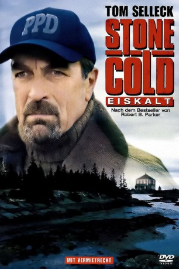

#4444 Jesse Stone 1 - Eiskalt
Alternativ: Jesse Stone: Stone Cold (Englischer Titel)
 
 IMDB-Wertung: 7.2 / 10
IMDB-Wertung: 7.2 / 10  Metascore: 0
Metascore: 0 
Ein Großstadt-Cop als Landei wider Willen: Seine gescheiterte Ehe, Alkoholprobleme und der Rauswurf beim Los Angeles Police Department liegen hinter dem desillusionierten Cop Jesse Stone, der als neuer Polizeichef der Kleinstadt Paradise an vielen Fronten kämpft.
Jahr: 2005
Dauer: 83 Minuten
FSK: 12
Land: USA Studio: Sony Pictures TelevisionTonspuren: DD5.1 - ,
Untertitel:
Auflösung: 1080p (1920x1056) Größe: 4126 MB
Genre: Thriller, Drama, Krimi, Mystery
Regisseur: Robert Harmon
Drehbuch: Michael Almereyda
Soundtrack:
Darsteller:
Datei: X:\Person\Jesse Stone\Jesse Stone 1 - Eiskalt (2005, FSK12, 1920x1056).mkv seit 19.09.2016
Festplatte: HD Collection-7+mehr(A-Z)+Person
 Es gibt insgesamt 12 Filme in der Gruppe 'Person\Jesse Stone'
Es gibt insgesamt 12 Filme in der Gruppe 'Person\Jesse Stone'